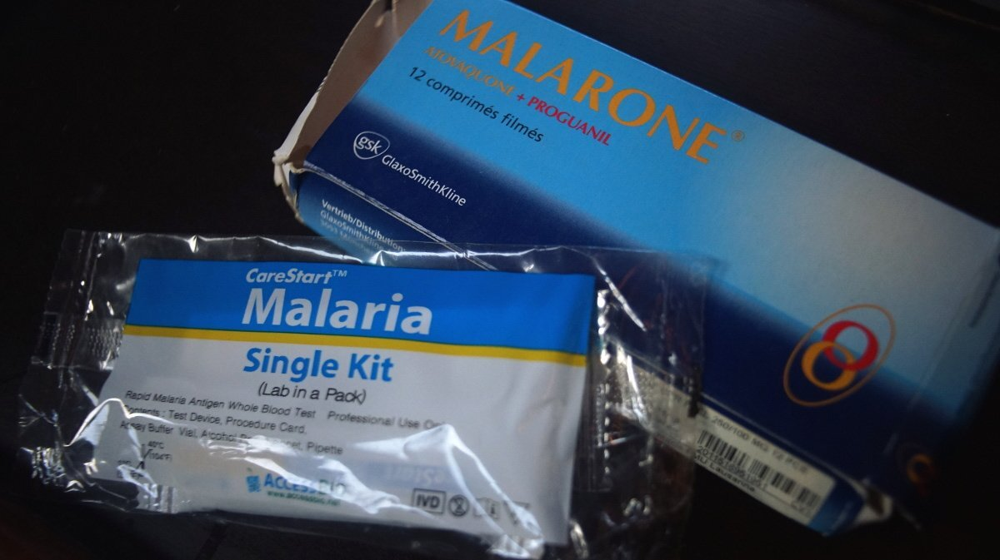

malaria
If travelling into Malaria endemic areas, we carry rapid diagnostic tests. The test is 90% accurate and quickly diagnoses if Malaria is present, and if so, which one you have, so that treatment can commence quickly if needed. We relied on tests because we were close to hospitals, but if traveling to islands with no facilities it might be a good idea to also carry antimalarials (e.g., malarone).
For medicine like Malarone, it's important to start this medication 1-2 days before you enter the malarious area, to continue while in the area and for 7 days after leaving.
The best protection is prevention. Use screens on windows and doors, if you must go out in the evening or after a big rain wear long-sleeved shirts and pants and wear insect repellents that contain diethyltoluamide (DEET).
Malaria symptoms: fever, chills, headache, other flu-like symptoms.